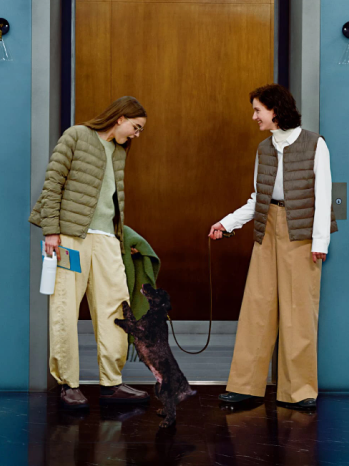

Unique Clothing
Episode:07 Item:PUFFTECH
A unique outfit will change habits. Changing habits means changing our lives. This is another story of the masterpieces that UNIQLO has created to this day.
PUFFTECH is a blend of soft clothing and technology. The jacket is lightweight and warm, equipped with a high-performance insulation layer developed in collaboration with Toray Industries. Since the fall & winter of 2022, various new designs with diamond and block quilting designs have been launched as new item options. What sets PUFFTECH apart from Ultra Light Down, which is fifteen years old, is the animal-free artificial material, which although similar in appearance, will not clump like real animal fur. PUFFTECH comes in a variety of versatile designs. Hand-washable at home and quick-drying, it is highly functional for modern life. However, realizing these useful features is easier said than done. Since development began in 2019, PUFFTECH has been on a journey to become the ideal sweatshirt.
Outerwear can be very difficult to wash, but it's the clothing that gets the most use. That's why UNIQLO pioneered washable suits and knitwear, so that outerwear can be easily washed by hand. Ensuring PUFFTECH is hand-washable is just as important as the lightweight and warm design, although it does raise concerns that washing will damage the insulation layer. However, adding more stuffing would only make the garment heavy. The result of our hard work to solve this conundrum was filling the jacket with the latest 3D ultra-fine hollow fiber, which debuted through the Fall & Winter 2024 collection. Due to its unique construction, washing will not damage its shape. The high air content makes it light and warm. This series of small fillings revolutionizes insulation layers at UNIQLO, paving the way for the next generation of fall and winter collections. It feels like you are wearing air. Turn the page to learn more about PUFFTECH's ever-evolving charms.
PUFFTECH Relaxed Jacket
Jaket wanita dengan motif berlian yang chic. Desain 3D ultra-fine hollow fiber terbaru, yang cocok digunakan untuk beragam desain. Bersiluet cocoon dan terdapat celah di bagian samping.
PUFFTECH Jaket Parka
Jaket parka PUFFTECH untuk pria dengan motif balok yang unik. Berkat desain panel yang menyatu dengan rata dan lapisan anti air (water-repellent) yang dapat menghalau hujan ringan, jaket ini sempurna untuk segala situasi, baik kegiatan di perkotaan hingga aktivitas outdoor.
Habiskan Satu Hari bersama PUFFTECH
This oversized PUFFTECH coat is part of the Uniqlo : C by Clare Waight Keller. Buttoned side slits give it a natural look, while four pockets on the chest and hips provide plenty of room for storage. Available in black (pictured) and khaki.
This voluminous non-quilted PUFFTECH Parka Jacket has a placket closure that helps block the wind. This is a new product from Uniqlo U that is suitable for cyclists. Its water-repellent finish keeps you dry in drizzling rain. The hem is accented with ruffles that add interest to the loose fit.
Lightweight jackets and vests can be worn as tops or warm layers in a variety of situations. Its special coating helps prevent static electricity. Snap buttons allow you to fold the round collar into a V-collar, so you can try different styles.
This diamond-print parka and collared jacket has a relaxed silhouette that is perfect for a variety of situations. The synthetic insulation lining does not shed easily and creates a neat look. This parka jacket is available in four colors for women and three colors for men.
